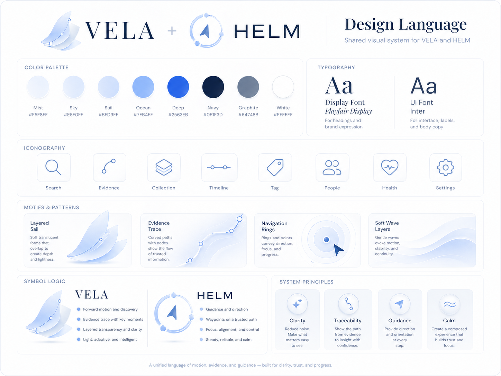

Project state
The source of truth should remain portable and understandable outside any single app.
VELA keeps the workflow in inspectable project files: materials, evidence, claims, method notes, deliverables, environment checks, and Codex handoff context.

The source of truth should remain portable and understandable outside any single app.
Materials, evidence, claims, and artifacts remain separate until required review fields are present.
Codex receives bounded tasks with explicit files, constraints, expected output, and known gaps.